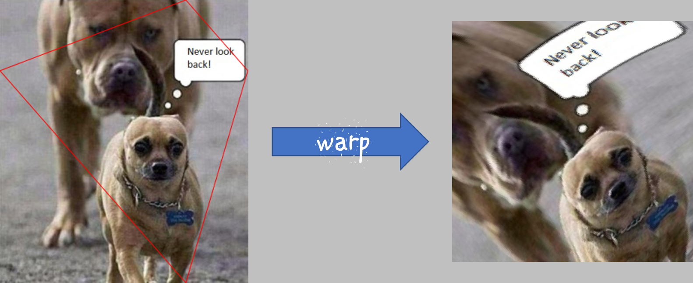

Pixmap#
Pixmaps（”像素图”）是 MuPDF 渲染功能的核心对象。它们表示一组矩形像素。每个像素由一个字节数（”组件”）来定义其颜色，以及一个可选的 alpha 字节来定义其透明度。
在 PyMuPDF 中，有几种创建 pixmap 的方式。除第一种外，其他方法都可以作为重载构造函数来使用。Pixmap 可以通过以下方式创建：
从文档页面（方法：
Page.get_pixmap()）空的，基于 Colorspace 和 IRect 信息
从文件
从内存图像
从纯像素的内存区域
从 PDF 文档中的图像
作为另一个 pixmap 的副本
备注
上述第 3 和第 4 点支持多种图像格式作为输入。有关更多信息，请参见 支持的输入图片格式 部分。
请查看 FAQ 部分，了解一些 pixmap 使用的示例。
Pixmaps (“pixel maps”) are objects at the heart of MuPDF’s rendering capabilities. They represent plane rectangular sets of pixels. Each pixel is described by a number of bytes (“components”) defining its color, plus an optional alpha byte defining its transparency.
In PyMuPDF, there exist several ways to create a pixmap. Except the first one, all of them are available as overloaded constructors. A pixmap can be created …
from a document page (method
Page.get_pixmap())empty, based on Colorspace and IRect information
from a file
from an in-memory image
from a memory area of plain pixels
from an image inside a PDF document
as a copy of another pixmap
备注
A number of image formats is supported as input for points 3. and 4. above. See section 支持的输入图片格式.
Have a look at the FAQ section to see some pixmap usage “at work”.
Method / Attribute |
Short Description |
|---|---|
clear parts of the pixmap |
|
determine used colors |
|
determine share of most used color |
|
copy parts of another pixmap |
|
apply a gamma factor to the pixmap |
|
invert the pixels of a given area |
|
save the pixmap as an OCRed 1-page PDF |
|
save the pixmap as an OCRed 1-page PDF |
|
create a Pillow Image |
|
save as a Pillow Image |
|
write to |
|
return the value of a pixel |
|
save the pixmap in a variety of formats |
|
set alpha values |
|
set the image resolution |
|
set pixmap x,y values |
|
set color and alpha of a pixel |
|
set color and alpha of all pixels in a rectangle |
|
reduce size keeping proportions |
|
tint the pixmap |
|
return a memory area in a variety of formats |
|
return a pixmap made from a quad inside |
|
transparency indicator |
|
pixmap’s Colorspace |
|
MD5 hashcode of the pixmap |
|
pixmap height |
|
interpolation method indicator |
|
check if only black and white occur |
|
check if only one color occurs |
|
IRect of the pixmap |
|
bytes per pixel |
|
|
|
Python pointer to pixel area |
|
|
|
pixmap’s total length |
|
size of one image row |
|
pixmap width |
|
X-coordinate of top-left corner |
|
resolution in X-direction |
|
Y-coordinate of top-left corner |
|
resolution in Y-direction |
Class API
- class Pixmap#
- __init__(self, colorspace, irect, alpha=False)#
新建空 Pixmap： 创建一个大小和原点由矩形指定的空 Pixmap。因此，irect.top_left 表示 Pixmap 的左上角，其宽度和高度分别为 irect.width 和 irect.height。请注意，图像区域 未初始化，将包含无意义的数据 —— 使用例如
clear_with()或set_rect()来确保图像内容有效。- 参数:
colorspace (Colorspace) – 颜色空间。
irect (irect_like) – Pixmap 的位置和尺寸。
alpha (bool) – 指定是否包含透明度字节。默认值为 False。
- __init__(self, colorspace, source)#
复制并设置颜色空间： 复制 source Pixmap，并转换其颜色空间。任何颜色空间组合都是可以的，但源颜色空间不能是 None。
- 参数:
colorspace (Colorspace) – 目标颜色空间。也可以是 None。在这种情况下，将创建一个“掩膜” Pixmap：其
Pixmap.samples将仅包含源的 alpha 字节。source (Pixmap) – 源 Pixmap。
- __init__(self, source, mask)#
从 v1.18.18 新增
复制并添加图像掩膜： 复制 source Pixmap，添加一个 alpha 通道，使用来自掩膜 Pixmap 的透明度数据。
- __init__(self, source, width, height[, clip])#
复制并缩放： 复制 source Pixmap，缩放到新的宽度和高度 —— 图像将相应地拉伸或缩小。支持部分复制。源颜色空间可以是 None。
- 参数:
source (Pixmap) – 源 Pixmap。
width (float) – 目标宽度。
height (float) – 目标高度。
clip (irect_like) – 限制结果 Pixmap 为此区域的 缩放 版本。
备注
如果宽度或高度不代表整数（即
value.is_integer() != True），则结果 Pixmap 将具有 alpha 通道。
- __init__(self, source, alpha=1)#
复制并添加或去除 alpha 通道： 复制 source 并添加或去除其 alpha 通道。如果 alpha 等于 source.alpha，则为相同的复制。如果添加了 alpha 通道，其值将设置为 255。
- 参数:
source (Pixmap) – 源 Pixmap。
alpha (bool) – 目标是否具有 alpha 通道，如果源颜色空间是 None，则默认并且是强制的。
备注
一个典型的用法是将颜色和透明度字节分离到不同的 Pixmap 中。某些应用程序需要这样做，例如 wxPython 中的 wx.Bitmap.FromBufferAndAlpha()：
>>> # 'pix' 是 RGBA Pixmap >>> pixcolors = pymupdf.Pixmap(pix, 0) # 提取 RGB 部分（去除 alpha） >>> pixalpha = pymupdf.Pixmap(None, pix) # 提取 alpha 部分 >>> bm = wx.Bitmap.FromBufferAndAlpha(pix.width, pix.height, pixcolors.samples, pixalpha.samples)
- __init__(self, filename)#
来自文件： 从 filename 创建一个 Pixmap。所有属性都从输入中推断出来。生成的 Pixmap 的原点是 (0, 0)。
- 参数:
filename (str) – 图像文件的路径。
- __init__(self, stream)#
来自内存： 从内存区域创建一个 Pixmap。所有属性都从输入中推断出来。生成的 Pixmap 的原点是 (0, 0)。
- 参数:
stream (bytes, bytearray, BytesIO) –
包含完整有效图像的内存数据。例如，可以使用 stream = bytearray(open(‘image.file’, ‘rb’).read()) 创建。bytes 类型仅在 Python 3 中支持，因为在 Python 2 中 bytes == str，该方法将把流当作文件名处理。
版本 1.14.13 更改： 现在也支持 io.BytesIO。
- __init__(self, colorspace, width, height, samples, alpha)#
来自原始像素： 从 samples 创建一个 Pixmap。每个像素必须由一定数量的字节表示，具体由 colorspace 和 alpha 参数控制。生成的 Pixmap 的原点是 (0, 0)。此方法适用于当其他程序提供原始图像数据时 —— 参见 FAQ。
- 参数:
colorspace (Colorspace) – 图像的颜色空间。
width (int) – 图像宽度
height (int) – 图像高度
samples (bytes, bytearray, BytesIO) –
包含图像所有像素的区域。如果指定了 alpha，则必须包含 alpha 值。
版本 1.14.13 更改： (1) 现在也可以使用 io.BytesIO。 (2) 数据现在 被复制 到 Pixmap，因此可以安全地删除或使其不可用。
alpha (bool) – 是否包含透明度通道。
备注
必须满足以下公式：(colorspace.n + alpha) * width * height == len(samples)。
从版本 1.14.13 开始，样本数据会被 复制 到 Pixmap。
- __init__(self, doc, xref)#
来自 PDF 图像： 从 PDF doc 中的图像创建一个 Pixmap，该图像由其
xref标识。所有 Pixmap 属性由图像设置。查看 extract-from-pages.py 和 extract-from-xref.py ，了解如何使用它来恢复 PDF 中的所有图像。- 参数:
doc (Document) – 已打开的 PDF 文档。
xref (int) – 图像对象的
xref。例如，可以使用Document.get_page_images()创建某一页面上所有图像的列表，该方法还会显示每个图像的xref数字。
- clear_with([value[, irect]])#
初始化样本区域。
- 参数:
value (int) – 如果指定，值范围为 0 到 255。每个像素的每个颜色字节将被设置为此值，如果存在 alpha，则设置为 255（非透明）。如果未指定，则所有字节（包括任何 alpha）将清除为 0x00。
irect (irect_like) – 要清除的区域。如果省略，则清除整个 Pixmap。只有在指定了 value 时，才可以指定此区域。
- tint_with(black, white)#
通过将黑色和/或白色替换为给定的颜色来为 Pixmap 上色，颜色以 sRGB 整数 值表示。仅支持颜色空间
CS_GRAY和CS_RGB，其他颜色空间会发出警告并被忽略。如果颜色空间是
CS_GRAY，将取平均值 (red + green + blue)/3。Pixmap 将就地更改。- 参数:
black (int) – 将黑色替换为此值。指定 0x000000 不会进行更改。
white (int) – 将白色替换为此值。指定 0xFFFFFF 不会进行更改。
示例：
tint_with(0x000000, 0xFFFFFF)不做任何操作。tint_with(0x00FF00, 0xFFFFFF)将黑色更改为绿色，保持白色不变。tint_with(0xFF0000, 0x0000FF)将黑色更改为红色，白色更改为蓝色。
- gamma_with(gamma)#
对 Pixmap 应用伽马因子，即调亮或调暗图像。颜色空间为 None 的 Pixmap 会发出警告并被忽略。
- 参数:
gamma (float) – gamma = 1.0 不做任何改变，gamma < 1.0 使图像变亮，gamma > 1.0 使图像变暗。
- shrink(n)#
通过将宽度和高度都除以 2:sup:
n来缩小 Pixmap。- 参数:
n (int) – 确定新的 Pixmap （样本）大小。例如，值为 2 时，将宽度和高度除以 4，结果大小为原始图像的 16th。值小于 1 会发出警告并被忽略。
备注
使用此方法可以在保留比例的同时减小 Pixmap 的大小。Pixmap 会 “就地” 更改。如果要保留原始图像并具有更细粒度的选择，请使用上述相应的构造函数。
- pixel(x, y)#
版本 1.14.5 新增： 返回位置 (x, y)（列，行）处像素的值。
- 参数:
x (int) – 像素的列号，必须在
range(pix.width)内。y (int) – 像素的行号，必须在
range(pix.height)内。
- 返回类型:
list
- 返回:
包含颜色值的列表，可能还有 alpha 值。列表的长度和内容取决于 Pixmap 的颜色空间和是否存在 alpha。对于 RGBA Pixmap，返回的结果例如是 [r, g, b, a]。所有项都是
range(256)范围内的整数。
- set_pixel(x, y, color)#
版本 1.14.7 新增： 操作位置 (x, y)（列，行）处的像素。
- 参数:
x (int) – 像素的列号，必须在
range(pix.width)内。y (int) – 像素的行号，必须在
range(pix.height)内。color (sequence) – 期望的像素值，作为一个整数序列，范围为
range(256)。序列的长度必须与Pixmap.n相等，包括任何 alpha 字节。
- set_rect(irect, color)#
版本 1.14.8 新增： 将矩形区域的像素设置为某个值。
- 参数:
irect (irect_like) – 要填充的矩形区域。实际区域是此参数与
Pixmap.irect的交集。如果交集为空（或参数无效），则不会进行更改。color (sequence) – 期望的值，作为一个整数序列，范围为
range(256)。序列的长度必须与Pixmap.n相等，包括任何 alpha 字节。
- 返回类型:
bool
- 返回:
如果矩形无效或与
Pixmap.irect的交集为空，则返回 False，否则返回 True。
备注
此方法等价于对矩形中的每个像素执行
Pixmap.set_pixel()，但如果涉及的像素很多，显然 要快得多。此方法可以像
Pixmap.clear_with()一样使用，用于使用某个颜色初始化 Pixmap，例如： pix.set_rect(pix.irect, (255, 255, 0)) （RGB 示例，将整个 Pixmap 填充为黄色）。
- set_origin(x, y)#
版本 1.17.7 新增：
设置 Pixmap 的左上角点的 x 和 y 坐标。
- 参数:
x (int) – x 坐标
y (int) – y 坐标
- set_dpi(xres, yres)#
版本 1.16.17 新增：
版本 1.18.0 更改： 保存为 PNG 图像时，这些值现在会被存储。
设置 x 和 y 方向的分辨率（dpi）。
- 参数:
xres (int) – x 方向的分辨率。
yres (int) – y 方向的分辨率。
- set_alpha(alphavalues, premultiply=1, opaque=None)#
版本 1.18.13 更改：
更改 alpha 值。Pixmap 必须具有 alpha 通道。
- 参数:
alphavalues (bytes,bytearray,BytesIO) – 新的 alpha 值。如果提供，则其长度必须至少为 width * height 。如果省略（
None），则所有 alpha 值设置为 255（无透明度）。版本 1.14.13 更改： 现在也接受 io.BytesIO。premultiply (bool) – 版本 1.18.13 新增： 是否将颜色分量与 alpha 值预乘。
opaque (list,tuple) – 忽略 alpha 值并将此颜色设置为完全透明。一个包含整数的序列，范围为
range(256)，长度为Pixmap.n。默认值为 None。例如，RGB 的典型选择是opaque=(255, 255, 255)（白色）。
- invert_irect([irect])#
反转 IRect irect 中所有像素的颜色。如果颜色空间是 None，则没有效果。
- 参数:
irect (irect_like) – 要反转的区域。省略时，反转整个图像。
- copy(source, irect)#
将 source Pixmap 的 irect 部分复制到此 Pixmap 的相应区域。两个 Pixmap 可以有不同的尺寸，并且每个 Pixmap 都可以具有
CS_GRAY或CS_RGB颜色空间，但它们当前 必须 具有相同的 alpha 属性 [4]。复制机制会自动调整源和目标之间的差异，具体如下：在 irect 和目标 Pixmap 的矩形之间，首先会计算一个“交集”。这会考虑矩形坐标和当前的属性值
Pixmap.x和Pixmap.y（你可以通过Pixmap.set_origin()修改这些值）。然后，复制该交集的对应数据。如果交集为空，则不会发生任何操作。- 参数:
source (Pixmap) – 源 Pixmap。
irect (irect_like) – 要复制的区域。
备注
示例：假设你有两个 Pixmap，
pix1和pix2，并且你想将pix2的右下角四分之一复制到pix1，使得它从pix1的左上角开始。使用以下代码：>>> # 防护：将 pix1 和 pix2 的左上角设置为 (0, 0) >>> pix1.set_origin(0, 0) >>> pix2.set_origin(0, 0) >>> # 计算 pix2 区域的左上角坐标 >>> x1 = int(pix2.width / 2) >>> y1 = int(pix2.height / 2) >>> # 将 pix2 的左上角移动到 (0, 0)， >>> # 使得待复制区域从这里开始： >>> pix2.set_origin(-x1, -y1) >>> # 现在复制... >>> pix1.copy(pix2, (0, 0, x1, y1))

- save(filename, output=None, jpg_quality=95)#
版本 1.22.0 更改： 新增 直接支持 JPEG 图像。图像质量可以通过参数 “jpg_quality” 控制。
将 Pixmap 保存为图像文件。根据选择的输出，可能仅支持某些或所有颜色空间，并且可以选择不同的文件扩展名。请参见下表。
- 参数:
filename (str,Path,file) – 要保存的文件。可以作为字符串、
pathlib.Path或 Python 文件对象提供。在后两种情况下，文件名将从相应的对象中获取。文件名的扩展名决定了图像格式，可以通过 output 参数覆盖。output (str) – 所需的图像格式。默认值为文件名的扩展名。如果这两个值和文件扩展名不受支持，将引发异常。有关可能的值，请参见 支持的输出图片格式。
jpg_quality (int) – 所需的图像质量，默认值为 95。仅适用于 JPEG 图像，其他格式将忽略此值。此参数在质量与文件大小之间进行权衡。值为 98 时接近无损。较高的值不应提高质量。
- 抛出:
ValueError – 对于不支持的图像格式。
- tobytes(output='png', jpg_quality=95)#
版本 1.14.5 新增： 将 Pixmap 返回为指定格式的 bytes 内存对象 – 类似于
save()。版本 1.22.0 更改： 新增 直接支持 JPEG。图像质量可以通过新参数 “jpg_quality” 影响。
- pdfocr_save(filename, compress=True, language='eng', tessdata=None)#
版本 1.19.0 新增：
版本 1.22.5 更改： 支持新的 Tesseract tessdata 参数。
使用 Tesseract 执行文本识别并将图像保存为带有 OCR 文本层的 1 页 PDF。
- 参数:
filename (str,fp) – 要保存的文件，可以是字符串或以 “wb” 模式打开的文件指针（包括
io.BytesIO()对象）。compress (bool) – 是否压缩生成的 PDF，默认值为
True。language (str) – 图像中出现的语言。必须以 Tesseract 格式指定，默认值为 “eng”（英文）。对于多种语言，请使用 “+” 分隔的 Tesseract 语言代码，如 “eng+spa”（英语和西班牙语）。
tessdata (str) – Tesseract 的语言支持文件夹名。如果省略，则此信息必须作为环境变量
TESSDATA_PREFIX提供。
备注
如果未安装 Tesseract 或未设置环境变量 “TESSDATA_PREFIX” 指向 tessdata 文件夹，并且未作为参数提供，则会失败。
- pdfocr_tobytes(compress=True, language='eng', tessdata=None)#
版本 1.19.0 新增：
版本 1.22.5 更改： 支持新的 Tesseract tessdata 参数。
使用 Tesseract 执行文本识别，并将图像转换为带有 OCR 文本层的 1 页 PDF。内部调用
Pixmap.pdfocr_save()。- 返回:
内存中的 1 页 PDF 文件。可以像这样打开
doc=pymupdf.open("pdf", pix.pdfocr_tobytes())，并可以在其page=doc[0]上执行文本提取。备注
另一个可能的用途是将其插入到某些 PDF 中。以下代码片段读取文件夹中的图像，并将其作为包含 OCR 文本层的页面存储在新 PDF 中:
doc = pymupdf.open() for imgfile in os.listdir(folder): pix = pymupdf.Pixmap(imgfile) imgpdf = pymupdf.open("pdf", pix.pdfocr_tobytes()) doc.insert_pdf(imgpdf) pix = None imgpdf.close() doc.save("ocr-images.pdf")
- pil_image()#
从 pixmap 创建一个 Pillow 图像。必须安装 PIL / Pillow。
- 抛出:
ImportError – 如果没有安装 Pillow。
- 返回:
一个
PIL.Image对象。
- pil_save(*args, unmultiply=False, **kwargs)#
使用 Pillow 将 pixmap 写入图像文件。对于 MuPDF 不支持的输出格式，请使用此方法。例如：
格式 JPX、J2K、WebP 等。
存储 EXIF 信息。
如果未提供 dpi 信息，将自动使用存储在 pixmap 中的 xres、yres 值。
一个简单的示例：
pix.pil_save("some.webp", optimize=True, dpi=(150, 150))。- 参数:
unmultiply (bool) – 如果 pixmap 的颜色空间是带透明度的 RGB，alpha 值可能已经或尚未与颜色组件（红/绿/蓝）相乘（称为“预乘”）。若要强制撤销预乘，请将此参数设置为
True。要了解更多背景信息，请参考 “预乘 alpha” here。
有关其他参数的详细信息，请参见 Pillow 文档。
自 v1.22.0 起，PyMuPDF 已直接支持 JPEG 输出。建议不再使用此方法进行 JPEG 输出，以提高性能并避免不必要的外部依赖。
- 抛出:
ImportError – 如果没有安装 Pillow。
- pil_tobytes(*args, unmultiply=False, **kwargs)#
版本 1.17.3 新增：
使用 Pillow 将图像作为指定格式的字节对象返回。例如：
stream = pix.pil_tobytes(format="WEBP", optimize=True, dpi=(150, 150))。有关其他参数的详细信息，请参见 Pillow 文档。- 抛出:
ImportError – 如果没有安装 Pillow。
- 返回类型:
bytes
- warp(quad, width, height)#
版本 1.19.3 新增：
通过“变形”四边形返回一个新的 pixmap，使得四边形的角成为新 pixmap 的角。目标 pixmap 的 IRect 将是
(0, 0, width, height)。- 参数:
quad (quad_like) – 一个包含在
Pixmap.irect内部（包括边界点）的凸四边形坐标。width (int) – 所需的结果宽度。
height (int) – 所需的结果高度。
- 返回:
一个新的 pixmap，其中四边形的角以顺时针方向映射到 pixmap 的角：
quad.ul -> irect.tl，quad.ur -> irect.tr，依此类推。- 返回类型:
- 
- color_count(colors=False, clip=None)#
版本 1.19.2 新增： 版本 1.19.3 更改：
确定 pixmap 的唯一颜色及其计数。
- 参数:
colors (bool) – (版本 1.19.3 更改) 如果为
True，返回一个颜色像素及其使用计数的字典；否则，仅返回唯一颜色的数量。clip (rect_like) – 一个位于
Pixmap.irect内的矩形。如果提供，只有这些像素会被考虑。这允许直接检查给定 pixmap 的子矩形，而无需构建子 pixmap。
- 返回类型:
dict 或 int
- 返回:
颜色的数量，或者是一个包含
pixel: count项的字典。pixel 键是一个长度为Pixmap.n的bytes对象。备注
要恢复像素的 元组，可以使用
tuple(colors.keys()[i])获取第 i 项。响应时间取决于 pixmap 的样本大小，对于非常大的 pixmap，可能会超过一秒。
在适用的情况下，具有不同 alpha 值的像素将被视为不同的颜色。
- color_topusage(clip=None)#
版本 1.19.3 新增：
返回最常用的颜色及其相对频率。
- 参数:
clip (rect_like) – 一个位于
Pixmap.irect内的矩形。如果提供，只有这些像素会被考虑。这允许直接检查给定 pixmap 的子矩形，而无需构建子 pixmap。- 返回类型:
tuple
- 返回:
一个元组
(ratio, pixel)，其中0 < ratio <= 1，pixel 是颜色的像素值。使用此方法来判断图像是否“几乎”是单色：响应(0.95, b"x00x00x00")表示 95% 的像素是黑色。有关示例，请参见 如何使用像素图：检查文本可见性。
- alpha#
指示 pixmap 是否包含透明度信息。
- Type:
bool
- digest#
pixmap 的 MD5 哈希值（16 字节）。这是一个用于唯一标识的技术值。
- Type:
bytes
- colorspace#
pixmap 的颜色空间。如果图像被视为所谓的 图像遮罩 或 模板遮罩，则该值可能为 None （当前仅在提取的 PDF 文档图像中发生）。
- Type:
- stride#
包含图像数据中每行的长度，即
Pixmap.samples的长度。这主要用于计算目的。以下表达式成立：len(samples) == height * stridewidth * n == stride
- Type:
int
- is_monochrome#
版本 1.19.2 新增：
如果是灰度 pixmap 且仅包含黑色和白色，则为
True。- Type:
bool
- is_unicolor#
版本 1.19.2 新增：
如果所有像素都相同（任何颜色空间），则为
True。在适用的情况下，具有不同 alpha 值的像素将被视为不同的颜色。- Type:
bool
- samples#
所有像素的颜色和（如果
Pixmap.alpha为 true）透明度值。这是一个width * height * n字节的区域。每 n 字节定义一个像素。每 n 字节依次表示一个像素，按扫描线顺序排列。后续扫描线紧接着排列，不进行填充。例如，对于 RGBA 颜色空间，samples 是一个字节序列，如 …, R, G, B, A, …，其中四个字节 R, G, B, A 定义一个像素。该区域可以传递给其他图形库，如 PIL（Python Imaging Library），以进行额外处理，例如将 pixmap 保存为其他图像格式。
备注
底层数据通常是一个 大型 内存区域，每次访问时会为此属性创建
bytes副本：例如，一个 RGB 渲染的字母页面的 samples 大小接近 1.4 MB。因此，请考虑将其分配给新变量，或使用memoryview版本Pixmap.samples_mv（v1.18.17 新增）。对底层数据的任何更改仅在再次访问此属性时才可见。这与使用 memoryview 版本不同。
- Type:
bytes
- samples_mv#
版本 v1.18.17 新增：
类似于
Pixmap.samples，但为 Pythonmemoryview格式。它直接指向 pixmap 中的内存，而不是其副本。因此，它的创建速度与 pixmap 的大小无关，并且对像素的任何更改会立即生效。像
bytearray(pix.samples_mv)或bytes(pixmap.samples_mv)这样的副本等效于并可替代pix.samples。我们也可以看到
len(pix.samples) == len(pix.samples_mv)。以下是一个 2 MB JPEG 的示例：内存视图 快一万倍:
In [3]: %timeit len(pix.samples_mv) 367 ns ± 1.75 ns per loop (mean ± std. dev. of 7 runs, 1000000 loops each) In [4]: %timeit len(pix.samples) 3.52 ms ± 57.5 µs per loop (mean ± std. dev. of 7 runs, 100 loops each)
在 Pixmap 被销毁后，任何尝试使用内存视图的操作都会因为
ValueError失败。- Type:
memoryview
- samples_ptr#
版本 v1.18.17 新增：
指向像素区域的 Python 指针。这是一种特殊的整数格式，可以被支持的应用程序（如 PyQt）用来直接访问样本区域，从而极大加速图像的构建。例如:
img = QtGui.QImage(pix.samples, pix.width, pix.height, format) # (1) img = QtGui.QImage(pix.samples_ptr, pix.width, pix.height, format) # (2)
上述两种方法得到的 Qt 图像相同，但 (2) 可以 快上几百倍，因为它避免了对像素区域的额外拷贝。
警告：在 Pixmap 被销毁后，Python 指针将失效，尝试使用它可能会导致 Python 解释器崩溃。
- Type:
int
- size#
包含 len(pixmap)。这通常等于 len(pix.samples) 加上一些平台特定的值，用于定义对象的其他属性。
- Type:
int
- width#
- w#
区域的宽度（以像素为单位）。
- Type:
int
- height#
- h#
区域的高度（以像素为单位）。
- Type:
int
- x#
左上角的 X 坐标（以像素为单位）。不能直接更改 – 使用
Pixmap.set_origin()。- Type:
int
- y#
左上角的 Y 坐标（以像素为单位）。不能直接更改 – 使用
Pixmap.set_origin()。- Type:
int
- n#
每个像素的组件数量。这个数值取决于颜色空间和 alpha。如果颜色空间不是 None （例如模板遮罩），那么 Pixmap.n - Pixmap.alpha == pixmap.colorspace.n 为真。如果颜色空间是 None，则 n == alpha == 1。
- Type:
int
- xres#
水平分辨率（每英寸点数 dpi）。请参阅
resolution。不能直接更改 – 使用Pixmap.set_dpi()。- Type:
int
- yres#
垂直分辨率（每英寸点数 dpi）。请参阅
resolution。不能直接更改 – 使用Pixmap.set_dpi()。- Type:
int
- interpolate#
仅为信息提供的布尔标志。如果图像将使用“线性插值”进行绘制，则设置为 True；如果使用“最近邻采样”则为 False。
- Type:
bool
{kind=link}
支持的输入图片格式#
Supported Input Image Formats
以下文件类型被支持作为 输入 来构建 pixmaps: BMP, JPEG, GIF, TIFF, JXR, JPX, PNG, PAM 和所有 Portable Anymap 系列（PBM, PGM, PNM, PPM）。这种支持是双重的：
通过 Pixmap(filename) 或 Pixmap(byterray) 直接创建一个 pixmap。该 pixmap 将具有由图像决定的属性。
使用 pymupdf.open(…) 打开这些文件。结果将显示为一个包含单个页面的文档。为该页面创建一个 pixmap 将提供在此上下文中可用的所有选项：应用矩阵、选择颜色空间和 alpha、将 pixmap 限制为剪切区域等。
SVG 图像 仅通过上述第 2 种方法支持，而不能直接作为 pixmaps。但请记住：结果是一个 光栅图像，正如所有 pixmap 一样 [3]。
The following file types are supported as input to construct pixmaps: BMP, JPEG, GIF, TIFF, JXR, JPX, PNG, PAM and all of the Portable Anymap family (PBM, PGM, PNM, PPM). This support is two-fold:
Directly create a pixmap with Pixmap(filename) or Pixmap(byterray). The pixmap will then have properties as determined by the image.
Open such files with pymupdf.open(…). The result will then appear as a document containing one single page. Creating a pixmap of this page offers all the options available in this context: apply a matrix, choose colorspace and alpha, confine the pixmap to a clip area, etc.
SVG images are only supported via method 2 above, not directly as pixmaps. But remember: the result of this is a raster image as is always the case with pixmaps [1].
支持的输出图片格式#
Supported Output Image Formats
支持多种图像 输出 格式。您可以选择直接将图像写入文件（Pixmap.save()），或者生成一个字节对象（Pixmap.tobytes()）。这两种方法都接受一个字符串来标识所需的格式（下表中的 Format 列）。请注意，并非所有组合的 pixmap 颜色空间、透明度支持（alpha）和图像格式都是可能的。
格式 |
颜色空间 |
透明度 |
扩展名 |
描述 |
|---|---|---|---|---|
jpg, jpeg |
gray, rgb, cmyk |
no |
.jpg, .jpeg |
联合图像专家组 |
pam |
gray, rgb, cmyk |
yes |
.pam |
可移植任意映射 |
pbm |
gray, rgb |
no |
.pbm |
可移植位图 |
pgm |
gray, rgb |
no |
.pgm |
可移植灰度图 |
png |
gray, rgb |
yes |
.png |
可移植网络图形 |
pnm |
gray, rgb |
no |
.pnm |
可移植任意图形 |
ppm |
gray, rgb |
no |
.ppm |
可移植像素图 |
ps |
gray, rgb, cmyk |
no |
.ps |
Adobe PostScript 图像 |
psd |
gray, rgb, cmyk |
yes |
.psd |
Adobe Photoshop 文档 |
备注
并非所有图像文件类型在所有操作系统平台上都受到支持（或至少常见）。例如 PAM 和可移植任意映射格式在 Windows 上较为罕见或甚至未知。
特别是在涉及 CMYK 颜色空间时，您可以通过 rgb_pix = pymupdf.Pixmap(pymupdf.csRGB, cmyk_pix) 将 CMYK pixmap 转换为 RGB pixmap，然后以所需格式保存。
如上所示，MuPDF 的图像支持范围在输入和输出方面有所不同。在两者都支持的格式中，PNG 和 JPEG 可能是最常见的。
我们还推荐将 “ppm” 格式用于 tkinter 的 PhotoImage 方法，像这样： tkimg = tkinter.PhotoImage(data=pix.tobytes(“ppm”)) （请参见教程）。这 非常 快（比 PNG 快 60 倍）。
A number of image output formats are supported. You have the option to either write an image directly to a file (Pixmap.save()), or to generate a bytes object (Pixmap.tobytes()). Both methods accept a string identifying the desired format (Format column below). Please note that not all combinations of pixmap colorspace, transparency support (alpha) and image format are possible.
Format |
Colorspaces |
alpha |
Extensions |
Description |
|---|---|---|---|---|
jpg, jpeg |
gray, rgb, cmyk |
no |
.jpg, .jpeg |
Joint Photographic Experts Group |
pam |
gray, rgb, cmyk |
yes |
.pam |
Portable Arbitrary Map |
pbm |
gray, rgb |
no |
.pbm |
Portable Bitmap |
pgm |
gray, rgb |
no |
.pgm |
Portable Graymap |
png |
gray, rgb |
yes |
.png |
Portable Network Graphics |
pnm |
gray, rgb |
no |
.pnm |
Portable Anymap |
ppm |
gray, rgb |
no |
.ppm |
Portable Pixmap |
ps |
gray, rgb, cmyk |
no |
.ps |
Adobe PostScript Image |
psd |
gray, rgb, cmyk |
yes |
.psd |
Adobe Photoshop Document |
备注
Not all image file types are supported (or at least common) on all OS platforms. E.g. PAM and the Portable Anymap formats are rare or even unknown on Windows.
Especially pertaining to CMYK colorspaces, you can always convert a CMYK pixmap to an RGB pixmap with rgb_pix = pymupdf.Pixmap(pymupdf.csRGB, cmyk_pix) and then save that in the desired format.
As can be seen, MuPDF’s image support range is different for input and output. Among those supported both ways, PNG and JPEG are probably the most popular.
We also recommend using “ppm” formats as input to tkinter’s PhotoImage method like this: tkimg = tkinter.PhotoImage(data=pix.tobytes(“ppm”)) (also see the tutorial). This is very fast (60 times faster than PNG).
Footnotes